| Bottom | homepage | Why Indeed | Billiard Balls |
|
|
The Star Wars Beam Weapons
and
Star Wars Directed-Energy Weapons (DEW)
(A focus of the Star Wars Program)
by
Dr. Judy Wood and Dr. Morgan Reynolds
(originally posted: October 17, 2006)
Page 1: The Bathtub
|
At the time this article was being developed, many people expressed disbelief that energy weapons existed outside of science fiction until they were reminded of the Star Wars Program, also known as the Strategic Defense Initiative (SDI)*. The name of this article was chosen as a reminder that energy weapons do exist and have been developed over 100 years. Most of this technology is classified information. It can also be assumed that such technology exists in multiple countries. The purpose of this article was to begin to identify the evidence of what happened on 9/11/01 that must be accounted for. In doing so, the evidence ruled out a Kinetic Energy Device (bombs, missiles, etc.) as the method of destruction as well as a gravity-driven "collapse."
*SDI was created by U.S. President Ronald Reagan on March 23, 1983.1 It is thought that SDI may have been first dubbed "Star Wars" by opponent Dr. Carol Rosin, a consultant and former spokeswoman for Wernher von Braun. However, Missile Defense Agency (MDA) historians attribute the term to a Washington Post article published March 24, 1983, the day after the Star Wars speech, which quoted Democratic Senator Ted Kennedy describing the proposal as "reckless Star Wars schemes."2 Before it was named the "Star Wars Program (SDI) in 1983, it was the Advanced Space Programs Development.3
12/12/10 -- Dr. Judy Wood
|
| 1Strategic Defense Initiative, Wikipedia, 2Sharon Watkins Lang. SMDC/ASTRAT Historical Office. "Where Do We Get Star Wars?", The Eagle. March 2007. 3 Robert M. Bowman, former Director of Advanced Space Programs Development for the U.S. Air Force in the Ford and Carter administrations. |
I. Foreword Top
-
This website is under construction. Due to the seriousness of this issue, we felt it was important to present the analysis and data as soon as possible. (Following the murder of my student, Michael Zebuhr, a truly extraordinary human being, I received an email stating, "we've done it before and we will do it again if need be.") Therefore, expect this website to be added to and updated over the next several days. Michael told me, "Whatever happens, don't ever stop pursuing this. It's too important."
Ambrose I. Lane talks with special guest Dr. Judy Wood about her evidence for the use of high-energy weapons in destroying the WTC Towers. "We Ourselves" with host Ambrose I. Lane Sr. on The Power XM Channel 169, archive, (mp3-1)(mp3-2)(mp3-3) 29 November 2006 Judy Wood narrates these pages web pages on "The Dynamic Duo" with Jim Fetzer Genesis Communications Network, gcnlive.com, archive, (mp3-1)(mp3-2) (mp3) 6 December 2006 Morgan Reynolds discusses these pages on "The Dynamic Duo" with Jim Fetzer Genesis Communications Network, gcnlive.com, archive, (mp3)(mp3) |
II. Introduction Top
If we are to understand what happened to the World Trade Center (WTC) buildings, we need to start with the evidence. The best theory about what happened to the WTC should explain all the real evidence.
So what types of evidence are available?
The quality, credibility and validity of different pieces of evidence varies. The strongest evidence is physical evidence and the strongest physical evidence is undisputed and corroborated by other evidence. Valid physical evidence should form a consistent whole and yield an integrated picture of what happened.1. Current visual evidence (are the Twin Towers gone?)
2. Eyewitness testimony (What did witnesses of diverse credibility say they thought they saw and heard, interviewed how many days after the event?)
3. Physical evidence in the form of actual physical items (carefully preserved?, chain of custody? tampering?, evaluation methods documented?, access to materials by other scientists?)
4. Photographs (validity of the object(s) in question?, how placed there?, subsequent tampering?, photographer?, chain of custody?, photo raw or manipulated?)
5. Video footage (same questions apply as with photos) and
6. Expert witness testimony (credentials?, credibility?, quality of analysis?).
A nearly limitless supply of photos and videos of the actual destruction and aftermath of the WTC event on 9/11 forms a rich database of physical evidence. These photos, for the most part, are undisputed, mutually reinforcing and consistent with other types of evidence. Only in rare cases, like alleged molten metal flowing from an upper floor of WTC 2 shortly before its complete destruction, are photos and videos disputed and uncorroborated.
|
Figure 1. (old Figure 01.) The WTC twin towers towering over the skyscrapers of lower Manhattan.
Source |
|
Now you see it.
|
Now you don't.
|
|
 |
 |
 |
| Figure 2. The height of the towers is compared to the height of WTC6 and the "rubble pile" shown in Figure 17. (1978) Source |
Figure 3. This photo was taken was take around noon on 9/11/01, showing the height of WTC6 compared to the "rubble pile" of WTC1 which is appears in the foreground. Where did the building go? (9/11/01) Source and here |
Figure 4. A view of the vacant lot where WTC1 stood just the day before. Where did the building go? (9/12/01) |
The World Trade Center was built on terra firma protected by an underground "bathtub" or foundation ring down to bedrock seven stories below the surface of lower Manhattan. This sturdy enclosure some call the "slurry wall" shielded the foundation of the Twin Towers as well as WTC buildings 3 & 6. According to Wall Street Journal architecture critic, Ada Louise Huxtable, this structure "…saved lower Manhattan from the waters of the Hudson River" (WSJ 9-28-06, p. D8). Many observers worried about whether the wall would continue to do its job to prevent flooding but "To the relief of the engineers, there is no evidence that the 70-foot-deep retaining wall around the basements has been damaged or breached, although the collapse of the towers left one section perilously unsupported."New York Times (link) In the SPIKE TV documentary about the iron workers at Ground Zero, one remarked, "You know, it was amazing, it didn't really damage [that much] ... if they had fallen over sideways, could you imagine the damage to Lower Manhattan?" (video1)(YouTube) (video2)
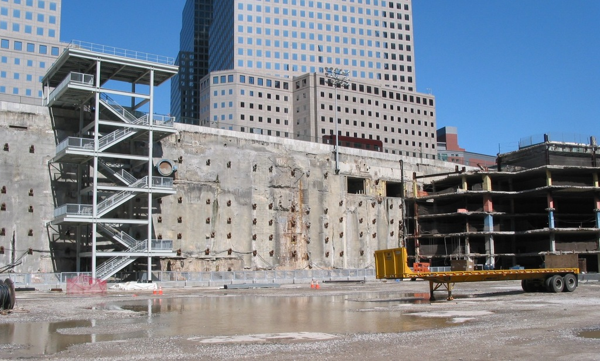 |
| Figure 5. (old Figure 1.) There was no significant damage to the bathtub on 9/11. This picture looks west-northwest, from the center of the WTC 1 footprint. Source: |
 |
| Figure 6. (old Figure 2.) WTC Station Platform after the event; this PATH train wasn't crushed. Source: |
On September 11 the bathtub mysteriously remained without significant damage despite two quarter-mile tall towers allegedly collapsing on it. How did the bathtub avoid significant damage despite a million tons of WTC material supposedly slamming into it? Even if no material directly hit the bathtub, serious seismic impacts on bedrock would have damaged walls, wall corners and tunnels under WTC leading under the Hudson River because of motion similar to that caused by an earthquake. The bathtub was not built to withstand such colossal impact, we may be assured, because New York is not an active seismic zone (see Figure 26). Although a disputed number, each tower weighed an estimated 500,000 tons and the official story insists airplane damage and fires caused each tower to collapse symmetrically into its own footprint. No bathtub structure could remain unscathed after a mountain of quarter-mile high material was dropped on it twice. The intact bathtub appears to contradict the official theory of a gravity-driven collapse in which virtually the entire weight of the Twin Towers would crash into the bathtub.
Figure 7-11 show diagrams of the PATH (Port Authority Trans Hudson) rail lines from New Jersey under the Hudson and up into the bottom of the bathtub of the World Trade Center. The south rail lines that run from New Jersey and the north lines return to NJ. The base of the bathtub is bedrock and the Twin Towers, rail lines and tunnels were anchored to that bedrock. If the bedrock were dramatically shaken, fissures in the tunnels would allow water to back up into the bathtub.
- Design and purpose Top
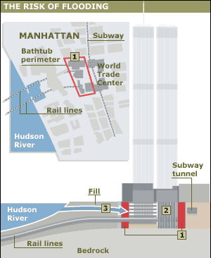 |
Figure 7. (old Figure 3.)
|
Figure 8 shows an overhead view of the WTC with the PATH commuter railroad lines under the Hudson, the walls of the bathtub in red and the subway line adjacent to the main WTC bathtub indicated by the dashed blue line. Figure 9 shows how stout the bathtub design was, and therefore how important this strong structure was to the WTC. For example, the tension tie-backs were embedded in 30-35 feet of bedrock. You can see many of the ends of tie-backs sticking out on the west wall of the bathtub in Figure 5.
|
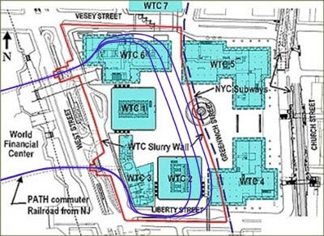 |
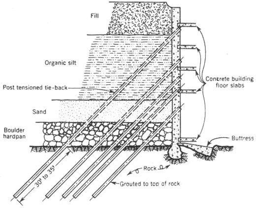 |
| Figure 8. (old Figure 4.) A more detailed map of the rail lines and WTC complex. adjusted from source: |
Figure 9. (old Figure 5.) Typical section shows placement of tie-backs during construction. After concrete floor slabs were cured, tension on tie-backs was released. Source: |
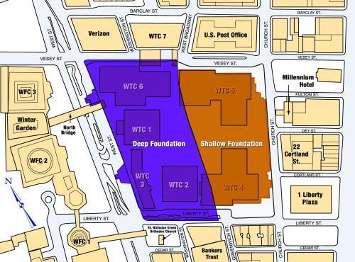 |
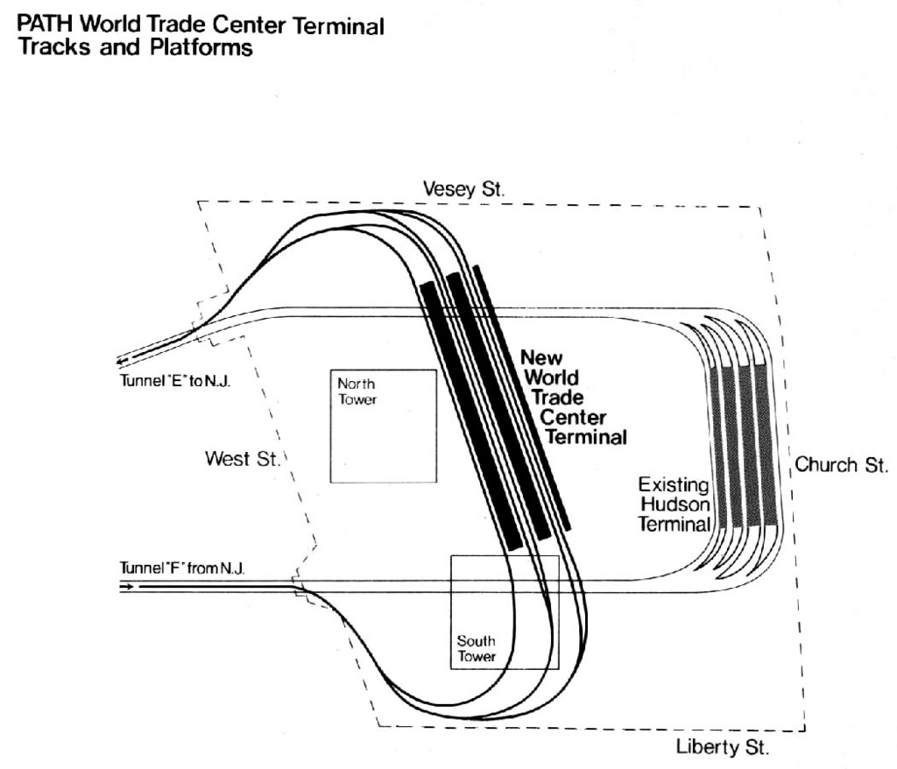 |
| Figure 10. (old Figure 6(a).) Map of the deep foundation (big bathtub) and shallow foundation (little bathtub). Source: |
Figure 11. (old Figure 6(b).) Detail of the PATH WTC terminal and tracks. Source: |
Figure 10 shows the two bathtubs under the WTC complex, with the Twin Towers within the deep bathtub and buildings 4 and 5 mostly within the shallow foundation. The subway went north-south through the shallow bathtub. The figure also identifies neighboring buildings like the WFC complex, the Verizon building, US Post Office, Bankers Trust and others. Note WTC 7 was not in either bathtub. Figure 11 shows the loop that PATH trains take within the big bathtub. Figure 12 shows a cross section of the WTC lower levels. The PATH trains turn beneath WTC 2 and the station platforms run parallel to the bathtub east wall, with the subway on a higher level on the other side of the big bathtub.
| Figure 12. (old Figure 7(a).) Cross section of the WTC complex, highlighting buildings 2 and 3 and the seven subbasements. Note the shopping mall at the ground level, on the right, below WTC4 and above the PATH and subway rail lines. adjusted from source |
Figure 13. (old Figure 7(b).) An overview shows the PATH rail lines and terminal on bedrock in the big bathtub. The subway line and platform are to the right of the big bathtub wall, August 2005, no tracks or terminals were relocated. adjusted from source: |
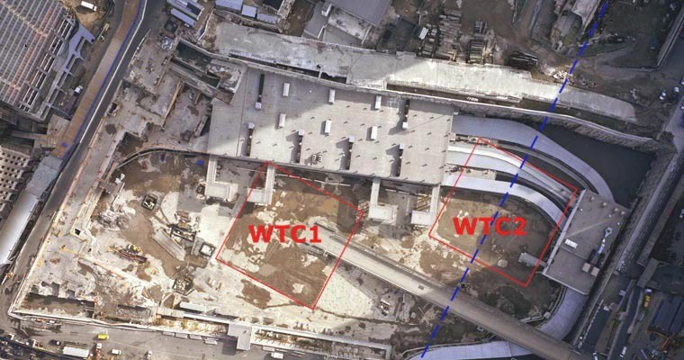 |
| Figure 14. (old Figure 8.) The Ground Zero site as of August 2006, showing the location of the buildings relative to the bathtub walls. Adjusted from here: |
Figure 14 shows an overhead view of the new PATH complex as of August 2006 at Ground Zero, with the west wall at the top of the photo. This gives a graphic look at how large the PATH layout is within the big bathtub. The rail lines and platforms remain in their original locations, suggesting that the underground damage to PATH was not devastating (see Figure 6).
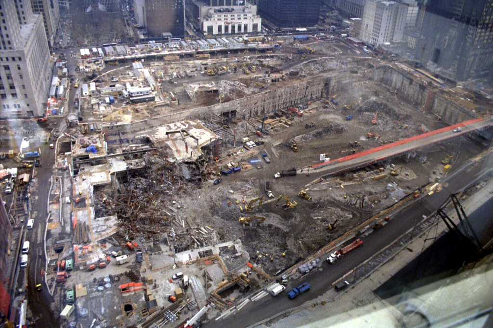 |
| Figure 15. (old Figure 9.) The nearly cleaned-out bathtub. (March 15, 2002) Source: |
Figure 15 shows Ground Zero and the big bathtub with the shallow bathtub in the foreground, lending another perspective. Some superficial damage to the top of the bathtub is visible in the foreground along the eastern wall, beneath where WTC 4, a 9-story building, once existed.
- Evidence of Little Damage Top
PATH trains resumed operation November 2003, only two years after 9/11. Water is visible in Figure 6, for example, but there was no flooding from the Hudson River, the water came from fire hoses cooling down molten metal for 99 days [reference] and the water had to go somewhere.
| Figure 16. (old Figure 10.) No damage to bathtub. Source: |
Figure 17. (old Figure 11. WTC Station Platform before 9/11.) Source: |
|
|
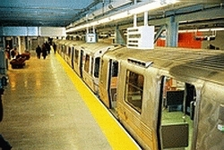 |
| Figure 18. (old Figure 12.) WTC Station Platform after the event; this PATH train wasn't crushed. Source: |
Figure 19. (old Figure 13.) WTC Station Platform November 23, 2003. Source: |
Figure 17 shows a PATH train in the big bathtub before 9/11, Figure 18 after 9/11 shows minor non-structural platform damage, probably water damage, and figure 19 shows the updated platform and cars which look rather similar.
|
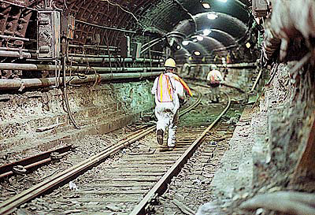 |
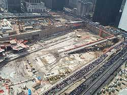 |
| Figure 20. (old Figure 14.) PATH train tunnel shortly after 9/11. Source: |
Figure 21. (old Figure 15.) A clean bathtub. Source: |
Figure 20 shows a PATH train tunnel with no structural damage, probably outside the bathtub. Figures 21 and 22 show a clean bathtub.
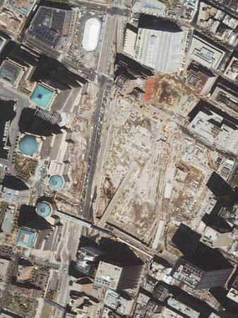 |
| Figure 22. (old Figure 16.) Overhead view of clean bathtub. Source: |
|
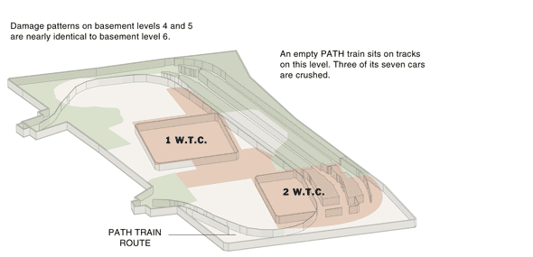 |
|
| Figure 23. (old Figure 17.) Four of the seven PATH train cars under WTC were not damaged. Source: |
|
Figure 23 shows a New York Times sketch of alleged damage to the underground portion of the WTC within the bathtub. It seems odd that the center of the PATH platforms were "not inspected or undetermined." Why? Figure 6 above, for example, shows no structural damage at that section of the platform, only water damage. We are not entirely confident that the NYT sketch is an accurate picture of the damage pattern in the bathtub. Interestingly, the west or Hudson side of each tower is damage-free, according to the NYT. Also, the PATH tunnel entrances, rigidly connected to the bathtub and bedrock, are "intact or mostly intact." Only three of seven PATH cars were damaged. While NYT uses the term "crushed," it seems unlikely that three cars could be totally crushed yet leave train four cars intact (see Figure 6).
Outside the bathtub east wall and in the shallow bathtub, even the subway suffered surprisingly little: -"Considering the devastation near the trade center, and the fact that the tunnels were only five feet below the road surface in some places, complete tunnel collapses were not as extensive as some engineers had feared." Subway:
|
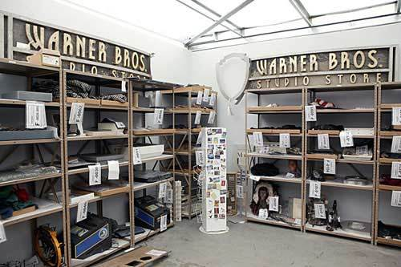 |

|
| Figure 24. (old Figure 18(a).) Warner Bros. store contents from WTC mall. Source: |
Figure 25. (old Figure 18(b).) Warner Bros. figures from WTC mall. (Source) |
Figure 24 shows store contents from the Warner Bros. store in the WTC shopping mall at the concourse level (first subbasement). Figure 25 shows figures recovered from the Warner Bros. store at the World Trade Center mall kept at hangar 17 at JFK international airport. Roadrunner does not have a scratch on him despite surviving destruction of WTC 2 above him. As shown in the cross section Figure 12 above, the shopping mall is the first floor to be impacted at the base of WTC 2.
IV. Earthquakes Top
New York is not located in a major earthquake zone (see Figure 26 below), so designers would not anticipate designing and building with the likelihood of surviving major earthquakes.
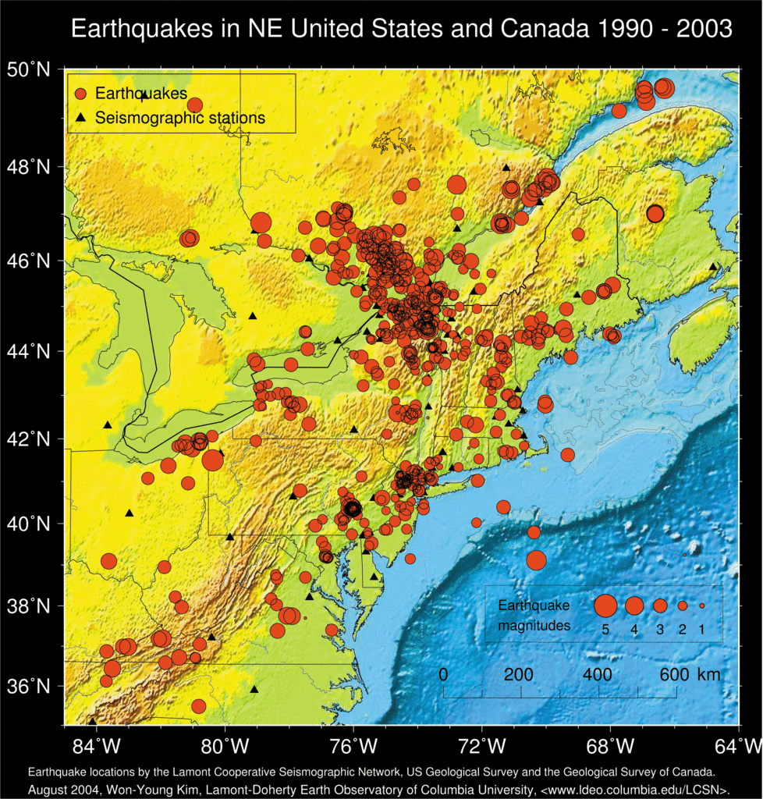 |
| Figure 26. (old Figure 19.) Earthquakes by location and magnitude, indicated by circles; locations of seismographic stations shown by triangles. Source: and here |
- Results of January quake in NYC and the 9/11 signal comparison Top
Figure 27 shows the amount of ground movement from a 2.4 Richter scale earthquake that hit NYC in January, 2001. The data appear to be "raw," that is, unsmoothed and unmanipulated. For example, the amplitude of the earth’s movement is nearly double the 8 micrometers of the diagram. Figure 28 shows a similar diagram for the destruction of WTC 1 on 9/11. The data appear very different from those in Figure 27, smoother, fewer spikes, less complex, and with no distinctive S and P waves…should also have a delay between the two waves. (See Figure 29.)
| Figure 27. (old Figure 20(a).) Earthquake in Manhattan (S & P waves), Jan. 17, 2001, Magnitude = 2.4. Source: |
||
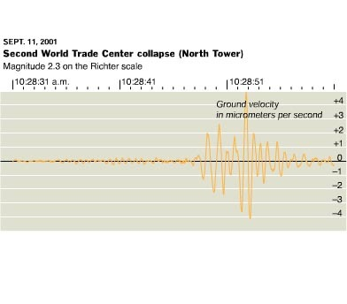 |
||
| Figure 28. (old Figure 20(b).) The destruction of WTC1, Sept. 11, 2001, Magnitude = 2.3. Does this diagram look similar to 20(a)? Source: |
||
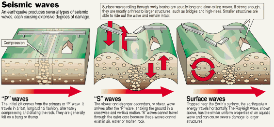 |
| Figure 29. (old Figure 20aa.) about P-waves and S-waves adjusted from Source: |
Most importantly, the amplitude of the 9/11 disturbance is less than half that of the January earthquake, despite a similar peak Richter reading. It is almost as if the data from 9/11 have attenuated, that peak movements have been reduced by some kind of filtering process. Does this difference reflect real data, that is, differences in real phenomena accurately recorded? Or have the data been filtered asymmetrically or differently? Or have the data been completely manufactured? We do not know, but for the sake of the analysis we use the Richter values reported. Could they have been lower than reported? Yes.
- Kingdome vs. Twin Towers Top
|
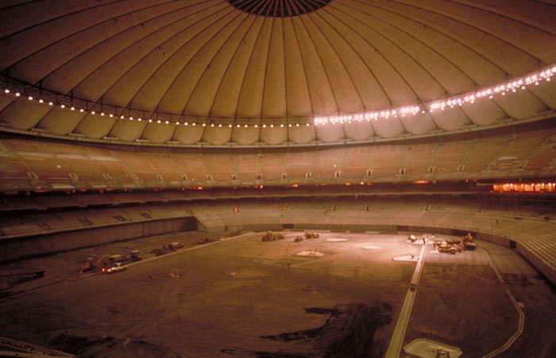 |
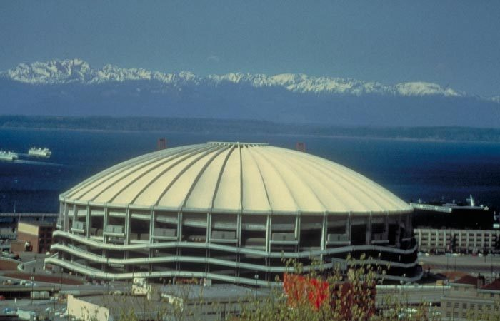 |
| Figure 30. (old Figure 21(a).) Finishing the interior of the Kingdome. Source: |
Figure 31. (old Figure 21(b).) Kingdome with the Olympic Mountains across Puget Sound. Source: |
|
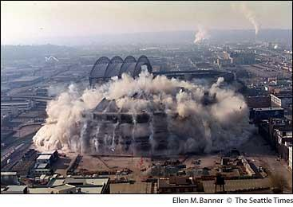 |

|
| Figure 32. (old Figure 21(c).) Demolition of the Kingdome. Source: |
Figure 33. (old Figure 21(d).) The Kingdome left a debris pile 30 feet high, 12% of its former height. Source: |
| Video 1. Here is a video of the Kingdome demolition. (mpg) (courtesy of Portland Indymedia) |
|
Each twin tower, by contrast, had 43,000 square feet, just over a tenth of the Kingdome footprint, and weighed an estimated 500,000 tons, or nearly 4x the Kingdome. Both the footprint and the weight of the twin towers were an order of magnitude different from the Kingdome, yet the Lamont-Dougherty station at Columbia University only reported a peak of 2.3 Richter scale reading for WTC 1 and 2.1 for WTC 2, about the same as the Kingdome.
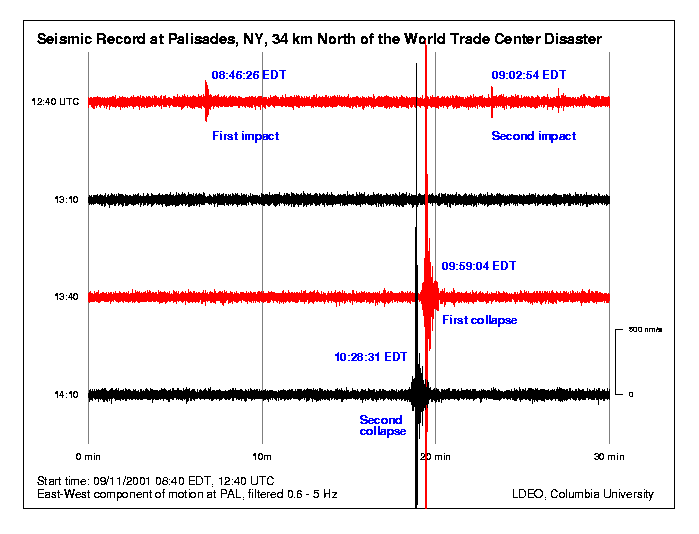 |
| Figure 34. (old Figure 22.) Seismic record at Palisades, NY. The vertical axis is the east-west ground speed in nm/s . The horizontal scale is time, showing a thiry-minute interval. The top red line starts at 8:40 AM EDT and records a siesmic disturbance at 8:46:26 EDT. At 9:02:54 EDT, there is a smaller and shorter disturbance. The second line is a continuation of the first line and begins at 9:10 AM EDT and shows no disturbance. The third line begins at 9:40 AM and shows a major seismic event at 9:59:04 EDT. The fourth line is a continuation and begins at 10:10 AM and shows a major seismic event at 10:28:31 EDT.
UTC = Coordinated Universal Time, also known as Greenwich Mean Time (GMT) where 8:40 AM EDT = 12:40 UTC. |
Although these data seem to be corrupted by unknown filters and a complicit Lamont-Doherty will not release the raw data, a reading similar to the Kingdome would be impossible if the twin towers were destroyed by conventional means (bottom up) because much greater weight would have slammed into a much smaller chunk of land and therefore would have shaken the ground far more than the Kingdome did. Each tower’s collapse should have registered at least four on the Richter scale given two orders of magnitude difference between the twin towers and Kingdome dimensions. The apparent fact that the Richter reading peaked at 2.3 and the disturbance lasted only 8 seconds indicates an extraordinary high-energy weapon was used top-down to preserve the bathtub and surrounding structures. And where are the data from the other recording stations shown in Figure 35? Are they being withheld?
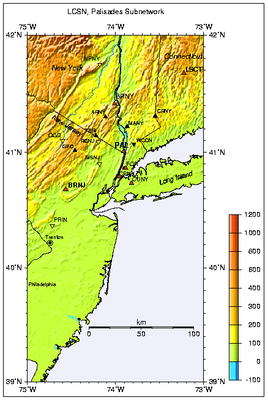 |
| Figure 35. (old Figure 23.) Location of seismic recording stations in the New York City area. Source |
Continue to next page.
| Top | homepage | Why Indeed | Billiard Balls |
|
|
|